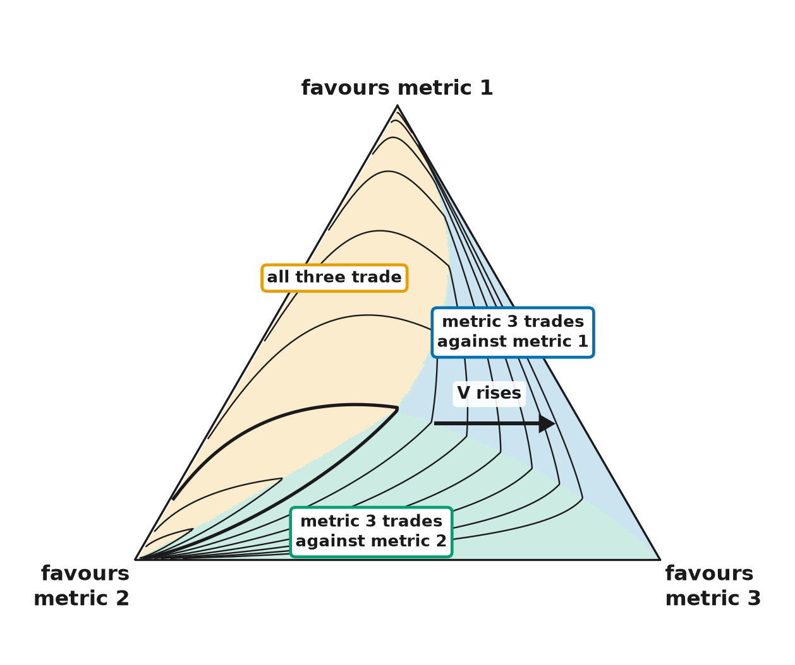
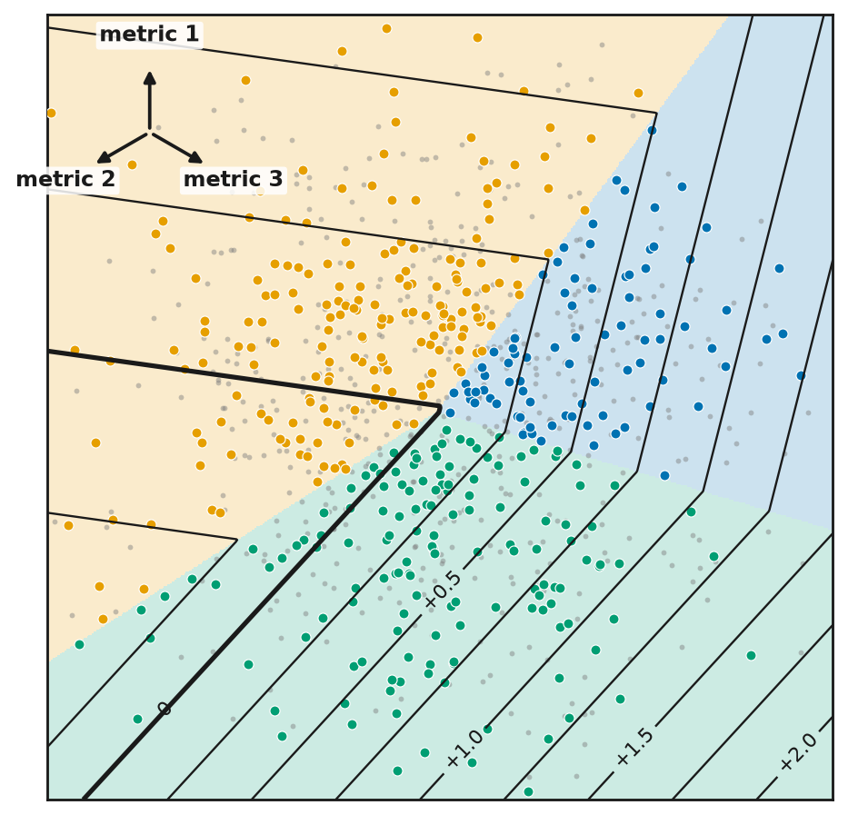

log V = overall level + h(position), exactly. The triangle shows position only, so each line joins positions of equal V among designs at one overall level. Lines are 0.25 apart in log V; the thick line passes through the average mix.


Index mock, Why image without lines · Index mock, Why image with lines